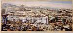

Biblia. De gantsche H. Schrifture vervattende alle de canonijcke boecken des Ouden en des Nieuwen Testaments. [...] Dordrecht, by Hendrick en Jacob Keur en Amsterdam, by Marcus Doornick in compagnie, 1686. -- (20082 G 1-2)
Hoewel de leden van de Dordtse synode geïllustreerde bijbeluitgaven niet aanbevalen, dachten vele lezers daar anders over. Aan het eind van de zeventiende eeuw kwamen voldoende losse prenten op de markt om in bijbels ingevoegd te worden. Ze waren vaak aanvankelijk bestemd geweest voor andere boeken, zoals De republiek der Hebreeen van Petrus Cunaeus, bewerkt en uitgegeven door Willem Goeree in 1682-1683 in Amsterdam. Het graveerwerk ervoor was gedaan door de bekende Jan Luyken.
Deze en andere prenten zijn gebruikt om de hier getoonde ‘Keurbijbel’ te verfraaien, maar de eigenaar was daarmee niet tevreden: hij liet zijn bijbel daarbij nog inkleuren door de Amsterdamse ‘meester-afsetter’ Dirk Jansz van Santen. Deze heeft hiermee zijn grootste kunststuk geleverd. Niet alleen alle initialen en vignetten, maar ook de vele prenten werden minutieus door hem van kleur voorzien. Het Oude Testament ligt open bij I Koningen 6, de bouw van de tempel in Jeruzalem door Salomo. Goeree beroemde zich op de grote nauwkeurigheid van zijn prenten. Zo zouden de maten van het gebouw in de juiste verhoudingen zijn weergegeven.
Literatuur
- W.K. Gnirrep, ‘Dirk Janszoon van Santen en een liefhebber der joodse oudheden’, in: Jaarverslagen [van het] Koninklijk Oudheidkundig Genootschap uitgebracht [...] in de honderd en vier en twintigste [-] honderd en zeven en twintigste jaarvergadering (1986), p. 50-64, vooral p. 58-59.
| vorige pagina | top pagina |